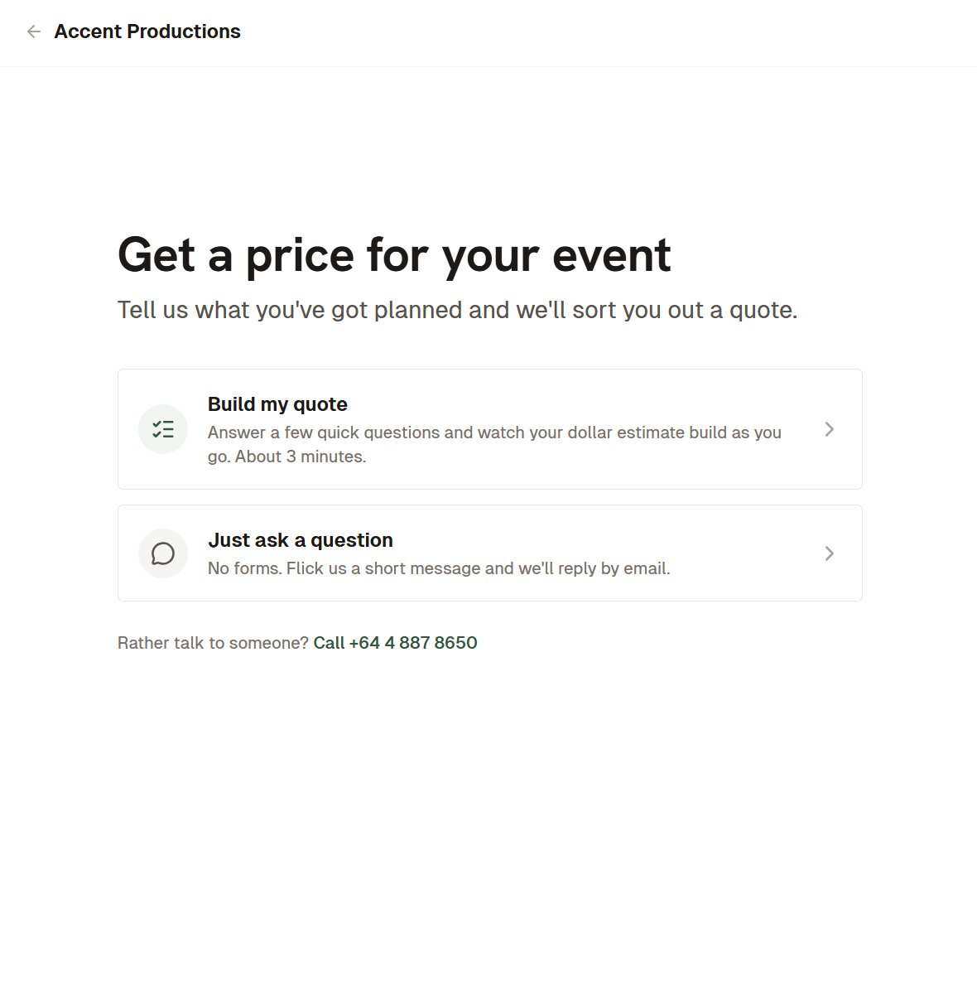
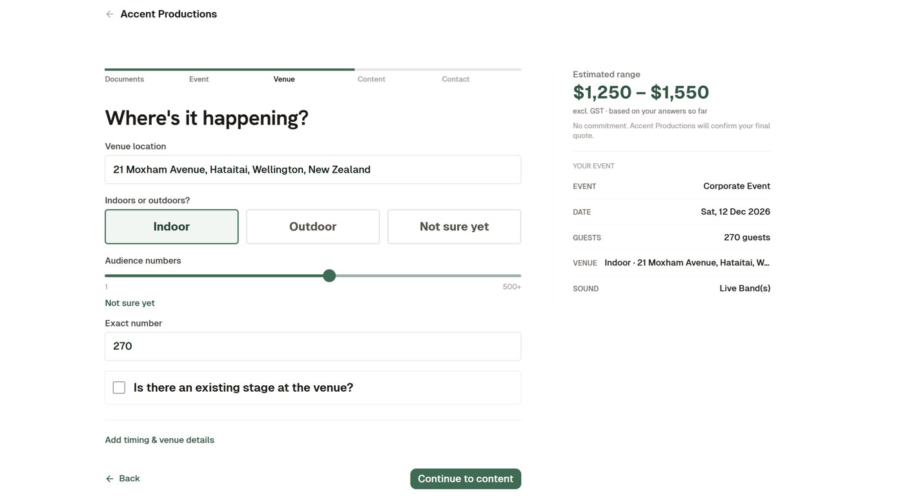
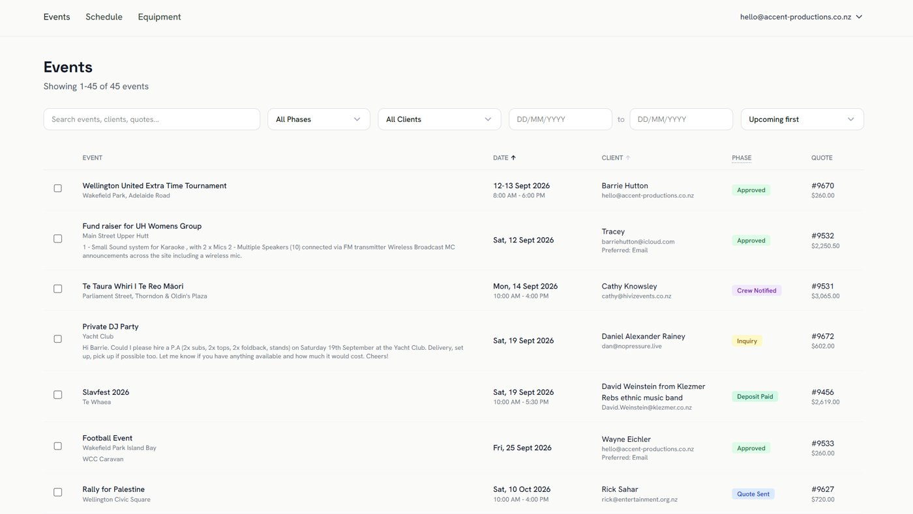
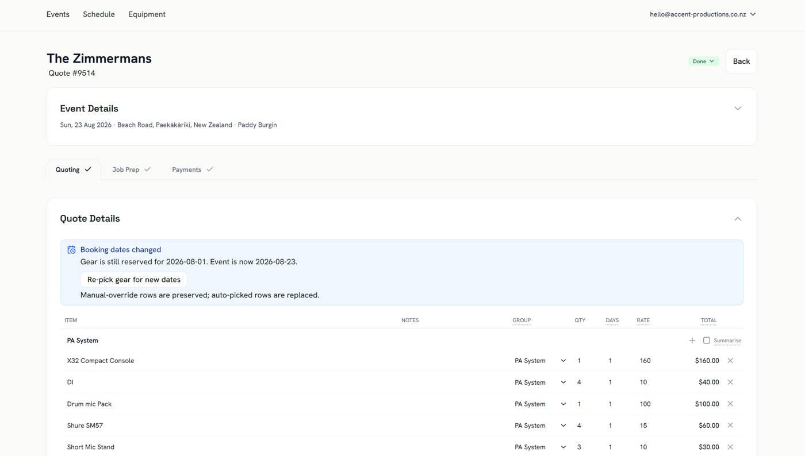

Kahu Hutton
HireOS
July 2026 to present. hireos.co.nz
A rental management system for equipment hire companies. Built and sold solo. Live at Accent Productions, Illumination Optics, NES Hire, TES Hire, and The Rock Factory.
Accent Productions is my dad's company, same client as the 2024 wind load analysis. I built his website first. Then I built him software to run the jobs behind it. Other hire companies saw it and wanted it, so I made it standalone and the other four came on. Demoing it around, it was clear people wanted the enquiry form and the phone answered far more than a whole new rental system. So I split the intake off and sell that on its own. It sits in front of whatever they already run, Current RMS included.
What it does
A customer fills in the company's form or rings their number. An AI pipeline drafts a proposal, HireOS prices it, and the company gets an email. Quoting, approval, payment, and crewing happen in the admin workspace and the numbers land in Xero. Jobs arrive drafted and priced, so the company only has to check them.

The customer form. Build a quote in about three minutes, or just ask a question.

The estimate builds as they answer. The company confirms the final quote.

The events list. Every job in one place with its phase and quote number.

A quote. Gear gets picked automatically and HireOS flags it when the dates move.
Selling it
Before selling it to anyone else I went and asked whether they actually had the problem. The process is straight out of Disciplined Entrepreneurship.
- Research first. Scraped Reddit and three NZ Facebook groups for complaints, then 24 discovery interviews with NZ hire companies, the same five questions every time. 17 of 24 named the same pain: enquiries turn up under-specified and someone has to translate them before they can be quoted.
- On a demo I read their own words from the interview back to them, then ring the company's number on speaker, the receptionist takes the enquiry, and the drafted job appears in their own Current RMS while they watch. Say what is on screen, then stop talking.
- Every demo is scripted, transcribed, and the script revised from what landed. An advisor said I was showing the whole product, so now the demo is the wedge only: the phone gets answered, the enquiry comes back written up. The ask is an email address, a number to forward, and a Current RMS sign-in. Free for ten weeks.
The important bits
- An AI receptionist answers the phone over SIP and writes up the request as a proposed job. A person confirms it before it becomes a booking.
- Go and Postgres on Cloud Run, React on Bun. Gear allocation runs under advisory locks so two jobs cannot book the same kit. Customers and contractors get one link per action: approve, pay, feedback.
- Run like a proper engineering team even though it is one person lol. Nineteen ADRs, everything in Terraform, CI on every PR against a real Postgres, and green on main deploys itself. Scales to zero and a billing budget emails me before it gets expensive.
- Since 9 July 2026: about 248,000 lines, 928 commits, 338 pull requests, 105 issues. Code is private :)
Back